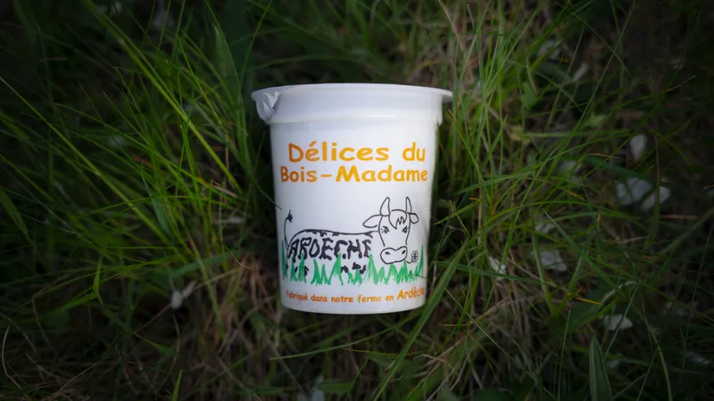
Vente directeYaourt Nature
Au lait entier de nos vaches Montbéliardes, pasteurisé à la ferme. Texture onctueuse, goût authentique.
Depuis 2001 · Désaignes, Ardèche
Produits fermiers en Ardèche, du champ à votre assiette. Yaourts artisanaux, faisselles et cerises — fabriqués avec passion.
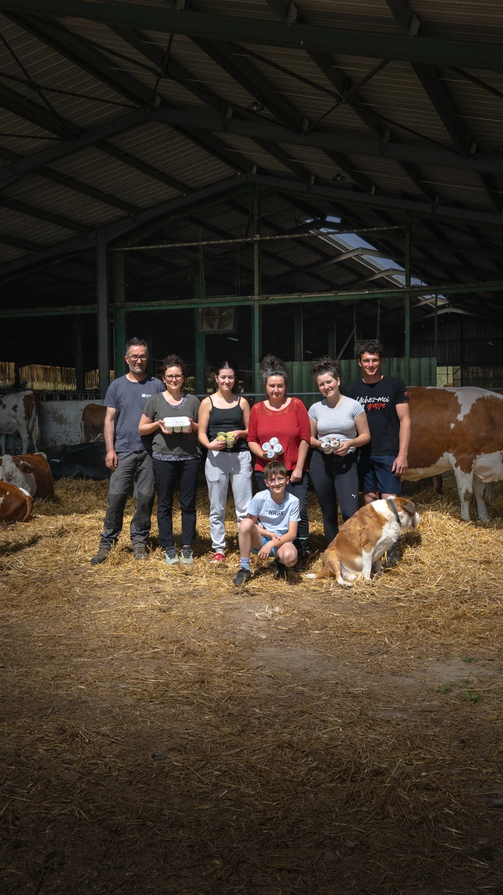
Fondée en 2001 par Fabrice au lieu-dit Les Chièzes à Désaignes, notre exploitation s'est construite autour de l'élevage de vaches laitières Montbéliardes et de sept hectares de cerisiers.
En 2023, Sylvain rejoint l'aventure et ensemble ils créent le GAEC des Prés du Moulin, avec la construction d'un laboratoire artisanal dédié à la fabrication de yaourts et faisselles.
Lait entier de vaches Montbéliardes, yaourts artisanaux, faisselles onctueuses et cerises ardéchoises — des produits faits avec soin.

Vente directeAu lait entier de nos vaches Montbéliardes, pasteurisé à la ferme. Texture onctueuse, goût authentique.
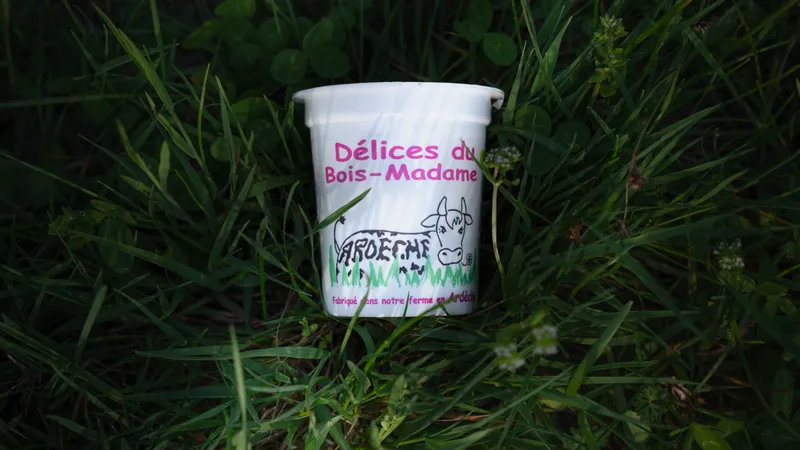
10 arômesDix saveurs pour toutes les envies, toutes faites maison.
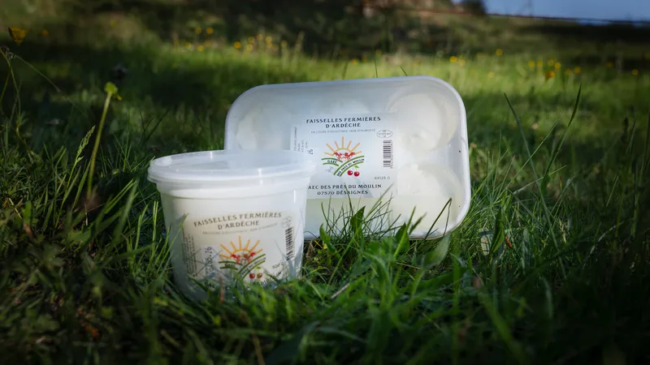
Circuit courtFaisselle 500g, plateau 6×125g et fromage blanc battu (sur commande). Lait entier pasteurisé.
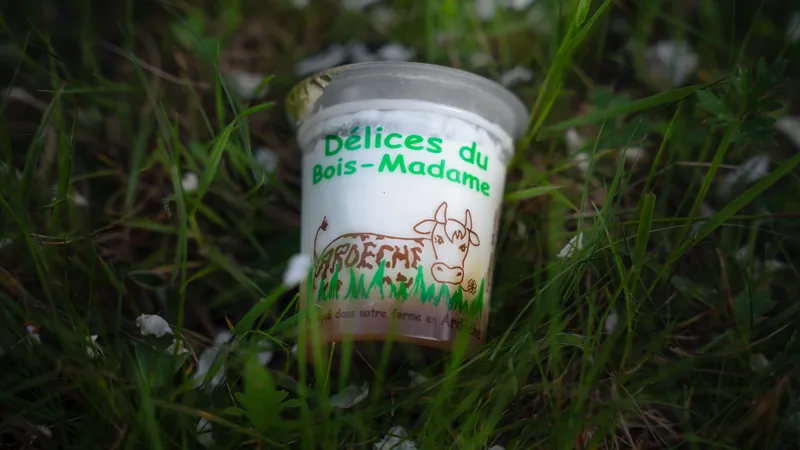
SpécialitéCrème de marron de la Ferme du Châtaignier à Lamastre — une saveur ardéchoise d'exception.
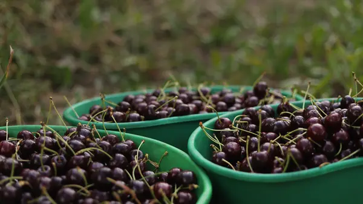
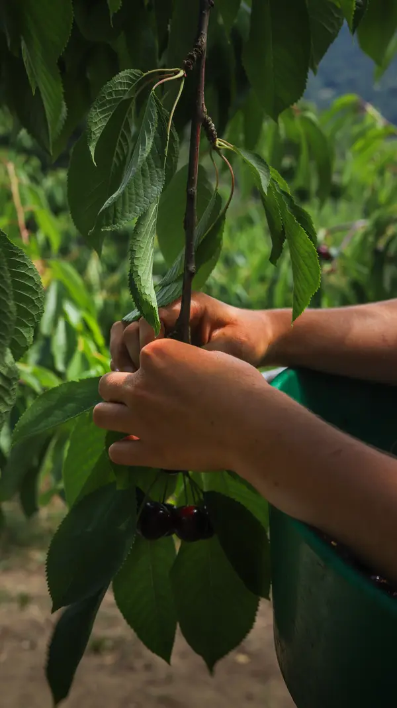
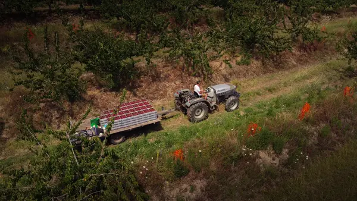
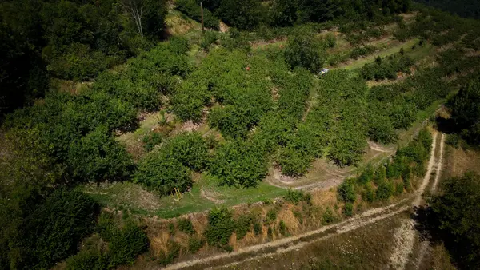
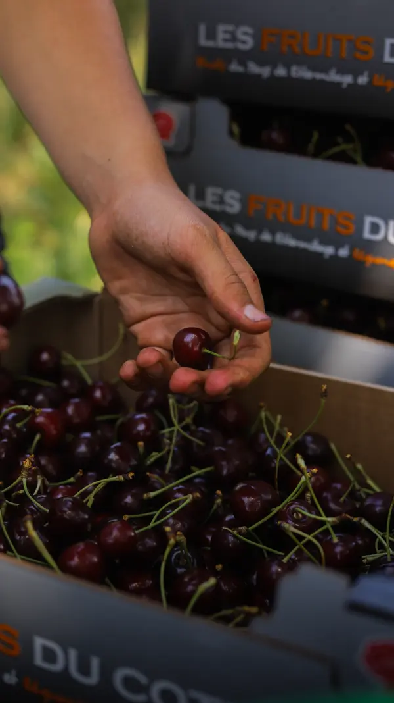
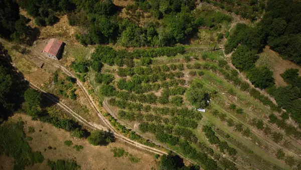
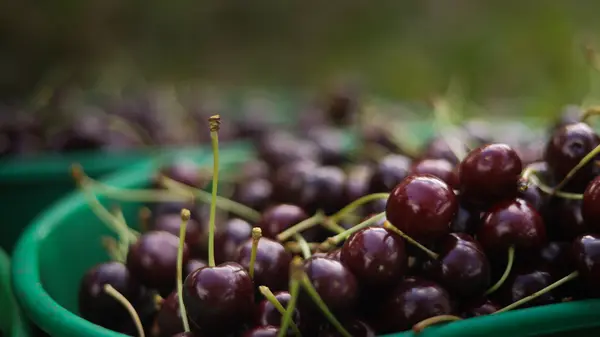
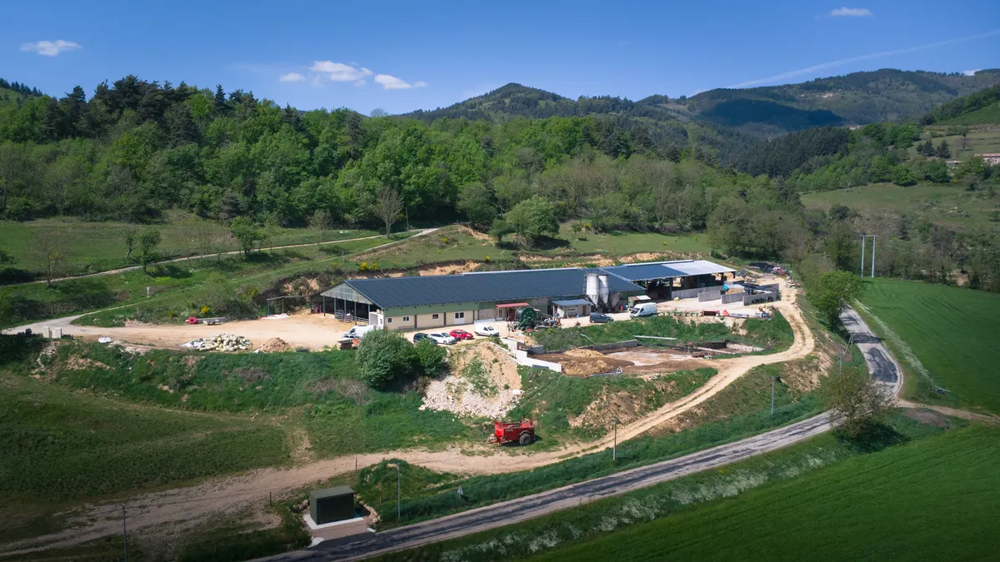